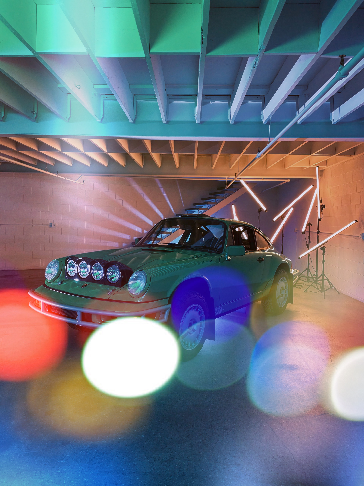

Race Service is an agency dedicated to the automtive community.
Typically, on Wednesday mornings, of each month, they have a
cars and coffee get together. Where enthusiats are invited
and showcase their wonderful rides!

All Makes Welcome
All Makes Welcome a cars and coffee event hosted by our little friendly coffee spot,
Commodity, located in Long Beach. Every last Saturday of the month
enthusiats get together, grab a coffee, chat up, and enjoy the view.
Brekkie Car Club
Brekkie Car Club started during the pandemic to help out small businesses.
A get together for a cause. Enthusiats get together at certain cafe locations
every month and support the small business, whether buying coffee or breakfast.
Typically, it's held on either mid month Saturday's or Sunday's, but always keep
a lookout at thier instgram page, where they announce event dates.
Heritage Gruppe
Heritage Gruppe is another car meet that started during the pandemic. This is a more of a cars n coffee
but bring you're own coffee. Enthusiats meet up every third Sunday of the month. A great
selection of new and classic euro cars.